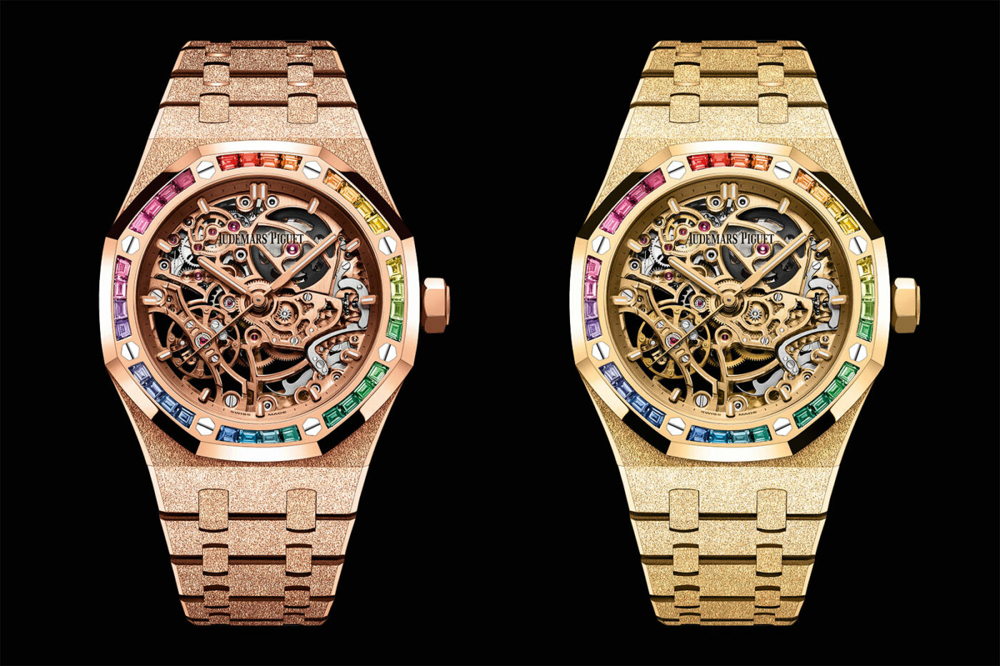
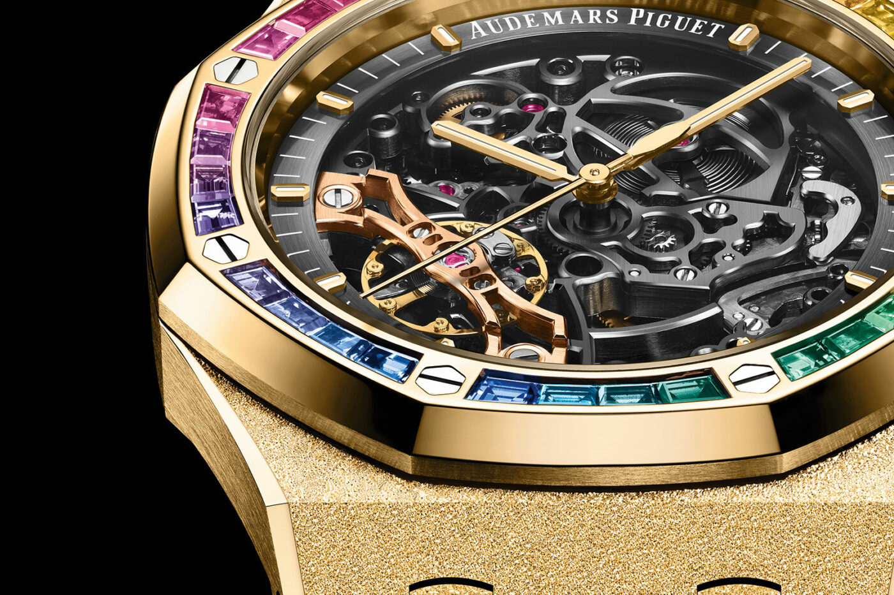

Audemars Piguet is celebrating its musical partnerships with five new Royal Oak Offshore Music Editions. The five pieces – two in 37mm cases and three in 43mm – share colorful VU Meter versions of the Royal Oak family’s distinctive Tapisserie dials, executed using either luminous printing or gem-set with colored gemstones, with applied 18K white gold hour markers and AP monogram. The Royal Oak’s strap studs have been given knurled texture “reminiscent of jack plugs”, while the crown guards are inspired by mixing console faders. Each of the watches is supplied with a total of four interchangeable mosaic-pattern rubber straps in either blue or black and turquoise, yellow and green with titanium AP pin buckles.
The titanium model with blue VU Meter dial is available in either 37mm or 43mm, both limited to 500 pieces. Both feature titanium and sapphire exhibition casebacks engraved with the words “Limited Edition of 500 Pieces.” Two 18K white gold models – again in either 37mm and 43mm cases, but this time not limited – feature bezels and blue aventurine dials invisible-set with Harmony-cut tsavorites, peridots, rubies and sapphires in blue, green, orange and yellow. The 37mm model uses 166 stones (3.7CT), while the 43mm model features 230 (6.15CT). The final variation features a 43mm black ceramic case with titanium studs, crown guards and and pin buckle on the strap, limited to 250 pieces. The watches are powered by two new in-house time-only 4Hz automatic movements; Calibre 5909 for the 37mm watches and Calibre 4309 for the 43mm options, offering 60 and 70-hour power reserves, respectively. Both are versions of the 2022 movement upgrades introduced into the Royal Oak collection to mark the model’s 50th anniversary. Prices to follow. Elsewhere in watches, IWC auctions off final Toto Wolff Big Pilot’s Watch Perpetual Calendar for Lewis Hamilton’s charity.

The movements haven’t changed. All watches use the calibre 3132, a self-winding movement with the double balance wheels I mentioned earlier, a 3.5Hz beat rate and a power reserve of 45 hours. All movements receive the best skeleton finishing in the business. Skeleton finishing requires every single part to be polished to perfection, demonstrating Audemars Piguet’s command of the arts while simultaneously pushing the price up. The movements are also the primary way of differentiating the watches, at least in these press pictures. In the 37mm piece, they’re plated the same colour as the case, pushing your eye’s focus to the rainbow bezel first. While both watches are technically unisex pieces, I suspect that Audemars Piguet made this design choice to amplify the appeal of the 37mm pieces to women.

Prices for these watches are high, and they’re only going to be available from Audemars Piguet’s boutiques starting in October. The price sits at CHF118,500 before taxation. At least they’re 50m water-resistant, though, and also not limited edition. Gotta look at the positives, right?